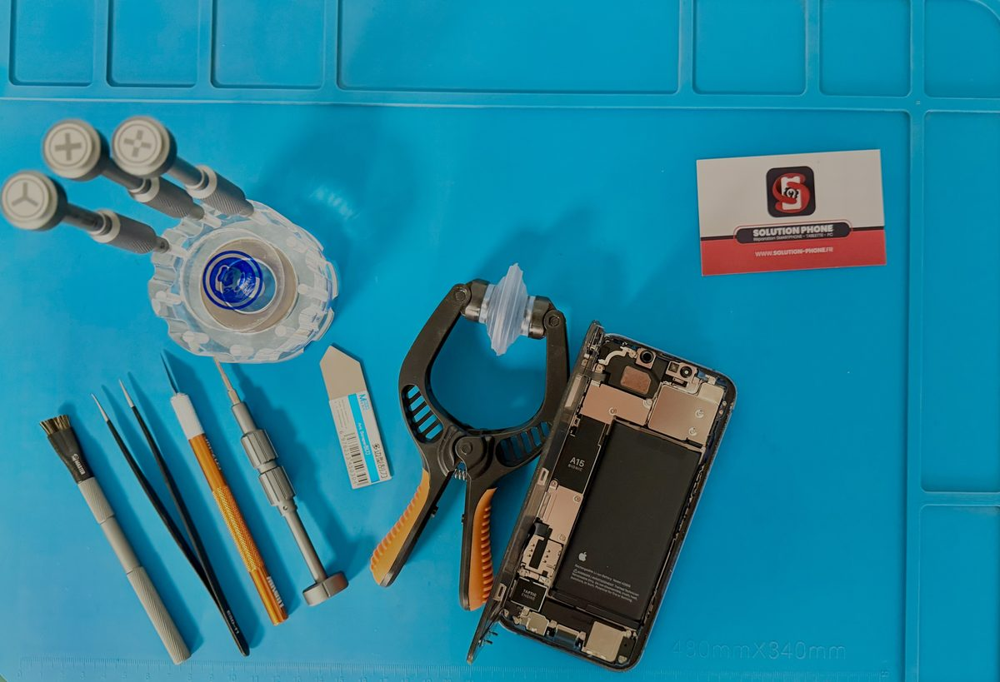

Écran et tactile
Vitre fissurée, affichage noir, taches, lignes ou tactile défaillant.
Écran, batterie, connecteur de charge, caméra ou panne à identifier : décrivez le modèle et le symptôme pour obtenir une réponse adaptée.
Prix finaux, pièce et main-d’œuvre comprises, 25 € déjà déduits (tarifs de septembre 2026, selon le modèle).

Vitre fissurée, affichage noir, taches, lignes ou tactile défaillant.
Autonomie faible, chauffe, extinction ou connecteur qui ne charge plus.
Caméra, son, boutons, oxydation ou panne nécessitant une recherche ciblée.
Deux téléphones qui ne s’allument plus ne présentent pas forcément la même panne. La batterie, le connecteur, l’écran, le logiciel ou la carte mère peuvent être concernés. Décrire ce qui s’est passé avant la panne — chute, contact avec un liquide, chauffe ou mise à jour — aide l’équipe à cibler les premiers contrôles.
L’atelier prend en charge les iPhone, Samsung Galaxy et de nombreux modèles Android, selon la disponibilité des pièces et la nature de l’intervention. Aucun remplacement n’est engagé sans confirmation du prix. Pour les pannes complexes, un diagnostic physique peut être nécessaire avant d’établir le devis.
21 rue Gambetta, 71000 Mâcon. Prix annoncé avant intervention.
Préparez la marque, le modèle exact, le symptôme et les circonstances de la panne.
L’atelier accueille sans rendez-vous. Pour confirmer la disponibilité d’une pièce précise, contactez l’équipe avant de vous déplacer.
Non. L’atelier intervient sur iPhone, Samsung et de nombreux smartphones Android selon le modèle et la disponibilité des pièces.
Indiquez la marque, le modèle exact et le symptôme dans le diagnostic en ligne ou sur WhatsApp. Une photo peut être utile pour un écran ou une coque endommagés.
Non. Un nettoyage, un réglage ou une réparation ciblée peut parfois suffire. Le diagnostic sert justement à éviter un remplacement au hasard.
Obtenez votre tarif réparation en ligne (25 € déjà déduits sur les pannes éligibles, garantie 6 mois) ou découvrez nos iPhone et Samsung reconditionnés garantis 12 mois en stock réel au 21 rue Gambetta à Mâcon.